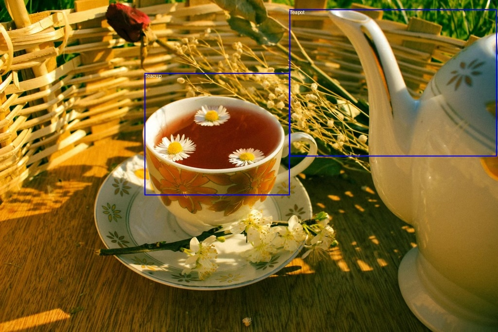
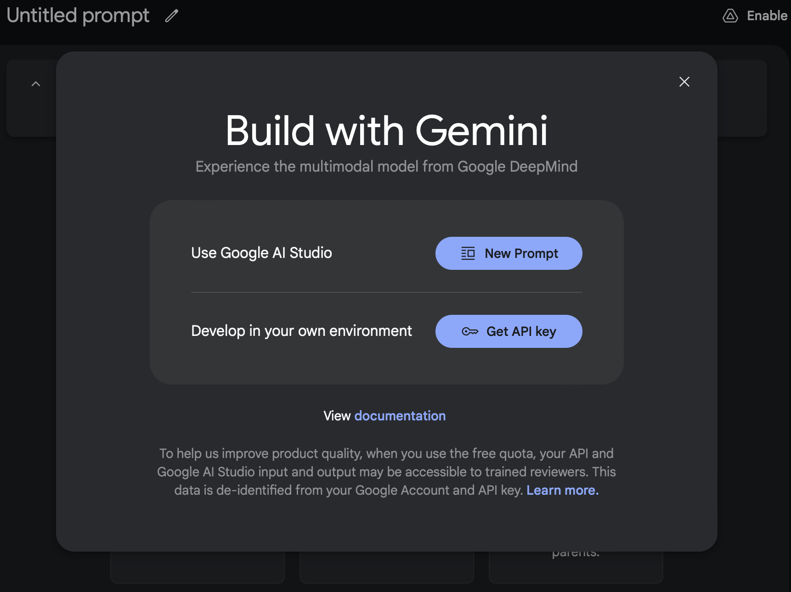

Google Gemini 101 - Object Detection
Navigating Gemini's API for object detection with vision and Structured Outputs.
This is a missing manual for how to get a simple working prototype up and running with Gemini’s vision mode and structured outputs. I’m confident that manual exists elsewhere, but I haven’t been able to find it. And if it exists within the confusing labyrinth of Google’s documentation, I’m certain that I will never find it.
My first experience with the Google Gemini docs resulted in far more questions than answers: should you use vertexai or google-generativeai? What’s the difference? Are there differences in what the things you can do with the two APIs? What the hell is a billing profile in Google Cloud? I just want to:
- put in a credit card
- get an API key
- write some code to solve my problem
Which is largely how it works with any sane model provider (OpenAI, Mistral, etc). This guide is aimed at helping you do that, by showing you the happy path.
As a motivating example, we’re going to build a silly little object detector for tea parties. We want to find the teapots and the teacups in images, like so:

I don’t think this is the best use case of Gemini, but I do think it’s a fun and illustrative one. 😀
If you just want the code, I’ve created a Github gist with it.
Getting Set Up
For this process, we’re going to be doing everything through the Google AI Studio process, which includes:
- getting a key
- setting up a billing account
- preparing our dev environment (exporting the key and installing the
google-generativeaipython package)
Get an API Key
First, go to Google AI Studio: https://aistudio.google.com/app/apikey
If this is your first time, you’ll be greeted with this screen:

Click “Get API key” and copy that key. If you’re doing Paid, don’t forget to follow through on “Go To Billing” and create and link a billing account on Google Cloud! Otherwise, you’ll only have the free tier limitations on requests per minute and total tokens. This can be a fun one to debug if your calls are failing or taking too long to return.Export your API Key
You’ll want to add it to your .bashrc or export it as GOOGLE_API_KEY. This is the default name that the Gemini package looks for, so if you use anything else you’ll need to explicitly load it.
export GOOGLE_API_KEY="<PASTE_YOUR_KEY>"
Install Google GenAI
Since we’re going through the Google AI Studio process and not the VertexAI one, we’ll want to install the google-generativeai package.
pip install -U google-generativeai
And there we go, we’re now ready to write some code!
Step 1: Making an API Call
The first thing to do is just make an API call. We want to ensure that our key is working, that we have access to the gemini-2.0-flash-exp model, and that we can work with the returns.
The code for making an API call is pretty simple, you just need to 3 steps:
1. add your key
2. make the call to a specific model (in our case, gemini-flash-2.0-exp, which is the latest release as of my writing this)
3. parse the results
import os
import google.generativeai as genai
def main() -> None:
# step 1: add your key
genai.configure(api_key=os.getenv("GOOGLE_API_KEY"))
# step 2: make the call to a specific model
model = genai.GenerativeModel("gemini-2.0-flash-exp")
result = model.generate_content(["Say hi, Gemini!"])
# step 3: parse the outputs
print(result.candidates[0].content.parts[0].text)
if __name__ == "__main__":
main()
And here’s the result I get running that:
$ python gemini_structured.py
Hi there! How can I help you today?
Step 2: Adding Images to the Call
This is a great start, but for the purposes of this post we’re interested in: 1. using images with Gemini’s vision mode 2. getting structured outputs
Let’s start with vision mode. Passing an image to the call from Python is pretty easy, you can use a standard PIL.Image and then pass it in as part of the generate_content call (you just pass in a list of content parts, which can be text or images).
For the first step, let’s install Pillow (for PIL):
pip install -U Pillow
We now have access to PIL.Image, which lets us load images with:
from PIL import Image
image = Image.open(image_path)
Plugging that into our script, we get:
from PIL import Image
import google.generativeai as genai
import argparse
import os
def main(image_path: str, size: float = 1024) -> None:
image = Image.open(image_path)
model = genai.GenerativeModel("gemini-2.0-flash-exp")
result = model.generate_content(
[
"""How many teacups and teapots are in this image?""",
image,
]
)
print(result.candidates[0].content.parts[0].text)
if __name__ == "__main__":
genai.configure(api_key=os.getenv("GOOGLE_API_KEY"))
parser = argparse.ArgumentParser()
parser.add_argument("image_path", help="Path to image file to process")
args = parser.parse_args()
main(args.image_path)
Note, I also cleaned up the script to parse arguments, so we can pass an image in from the command line. I’ll be using the following image (Creative Commons, from Pexels) saved as image.jpeg in my directory:
And after running, I get:
$ python gemini_structured.py image.jpeg
Based on the image, there is **1 teacup** and **1 teapot**.
So we know that Gemini can see the picture, and can at least count to 1. 🎉
Step 3: Getting Structured Results
from typing_extensions import TypedDict, Literal
from PIL import Image, ImageDraw
import google.generativeai as genai
import argparse
import json
import os
class TeaSet(TypedDict):
type: Literal["Teacup", "Teapot"]
def main(image_path: str, size: float = 1024) -> None:
image = Image.open(image_path)
# I've found that localization works better when the image is smaller
image.thumbnail((size, size))
image.save("/Users/jbarrow/vaults/DocAI/Images/gemini-in.jpeg")
model = genai.GenerativeModel("gemini-2.0-flash-exp")
result = model.generate_content(
[
"""Find all the teacups and teapots in the image.
Return your answer as a list of JSON objects.""",
image,
],
generation_config=genai.GenerationConfig(
response_mime_type="application/json",
response_schema=list[TeaSet],
),
)
objects = json.loads(str(result.candidates[0].content.parts[0].text))
print(json.dumps(objects, indent=4))
if __name__ == "__main__":
genai.configure(api_key=os.getenv("GOOGLE_API_KEY"))
parser = argparse.ArgumentParser()
parser.add_argument("image_path", help="Path to image file to process")
args = parser.parse_args()
main(args.image_path)
[
{
"type": "Teacup"
},
{
"type": "Teapot"
}
]
Step 4: Bounding Boxes
One neat trick that Gemini can do quite well (better than GPT-4o but not perfectly) is localizing objects within an image by returning bounding boxes.
You can do this by prompting Gemini to return a bounding box for the object in the format:
`[ymin, xmin, ymax, xmax]`
In order to get the bounding boxes, it’s 2 simple modifications to our above code. First, we have to add the bounding_box key to our TeaSet typed dict:
class TeaSet(TypedDict):
type: Literal["Teacup", "Teapot"]
bounding_box: list[int]
(N.B. I would have preferred to use a tuple[int, int, int, int], but that gets converted to an unsupported schema by Gemini using maxItems, so instead I’m sticking with the above)
And second, we update our prompt to tell Gemini what format to return the box in:
"""Find all the teacups and teapots in the image.
Return your answer as a list of JSON objects with the type and bounding box.
Return the bounding box in [ymin, xmin, ymax, xmax] format."""
And that’s it, we’re now getting bounding box info!
$ python gemini_structured.py image.jpeg
[
{
"bounding_box": [
165,
177,
696,
601
],
"type": "Teacup"
},
{
"bounding_box": [
23,
596,
556,
984
],
"type": "Teapot"
}
]
However, how good are those bounding boxes? What is the coordinate space? We’ll want to plot them overtop our image to verify.
Drawing the Bounding Boxes
Each value in the returned bounding box will be between 0 and 1000, so to get the image coordinates you have to do some post-processing.
Luckily, that post-processing is simple: divide the coordinate by 1000, and multiply by the image dimension (either height or width). We can write a quick little function that normalizes the bounding box and plots it over the image like so:
from PIL import ImageDraw
def draw_bounding_box(
image: Image.Image, type: str, bbox: list[int]
) -> Image.Image:
width, height = image.size
draw = ImageDraw.Draw(image)
ymin, xmin, ymax, xmax = [coord / 1000 for coord in bbox]
box_xmin = int(xmin * width)
box_ymin = int(ymin * height)
box_xmax = int(xmax * width)
box_ymax = int(ymax * height)
draw.rectangle(
[(box_xmin, box_ymin), (box_xmax, box_ymax)],
outline="blue",
width=2,
)
draw.text(
(box_xmin, box_ymin),
type,
fill="white",
)
return image
Full Code
If we take all the above modifications and put it into a full script:
from typing_extensions import TypedDict, Literal
from PIL import Image, ImageDraw
import google.generativeai as genai
import argparse
import json
import os
def draw_bounding_box(
image: Image.Image, type: str, bbox: list[int]
) -> Image.Image:
width, height = image.size
draw = ImageDraw.Draw(image)
ymin, xmin, ymax, xmax = [coord / 1000 for coord in bbox]
box_xmin = int(xmin * width)
box_ymin = int(ymin * height)
box_xmax = int(xmax * width)
box_ymax = int(ymax * height)
draw.rectangle(
[(box_xmin, box_ymin), (box_xmax, box_ymax)],
outline="blue",
width=2,
)
draw.text(
(box_xmin, box_ymin),
type,
fill="white",
)
return image
class TeaSet(TypedDict):
type: Literal["Teacup", "Teapot"]
bounding_box: list[int]
def main(image_path: str, size: float = 1024) -> None:
image = Image.open(image_path)
# I've found that localization works better when the image is smaller
image.thumbnail((size, size))
model = genai.GenerativeModel("gemini-2.0-flash-exp")
result = model.generate_content(
[
"""Find all the teacups and teapots in the image.
Return your answer as a list of JSON objects with the type and bounding box.
Return the bounding box in [ymin, xmin, ymax, xmax] format.""",
image,
],
generation_config=genai.GenerationConfig(
response_mime_type="application/json",
response_schema=list[TeaSet],
),
)
objects = json.loads(str(result.candidates[0].content.parts[0].text))
for object in objects:
details = TeaSet(**object)
if "bounding_box" in details:
image = draw_bounding_box(
image, details["type"], details["bounding_box"]
)
image.show()
if __name__ == "__main__":
genai.configure(api_key=os.getenv("GOOGLE_API_KEY"))
parser = argparse.ArgumentParser()
parser.add_argument("image_path", help="Path to image file to process")
args = parser.parse_args()
main(args.image_path)
Now when we run our code, we get something like the following result:
Pretty neat!
Now, there are some caveats and gotchas with structured outputs from Gemini, but those are beyond the scope of this post. In the future, we’ll look at a few, including:
- use of the OpenAI API with Gemini
- the funky subset of OpenAPI that Gemini uses
- setting some fields to be required (all fields are by default optional using the above methods)
- improving localization with few-shot